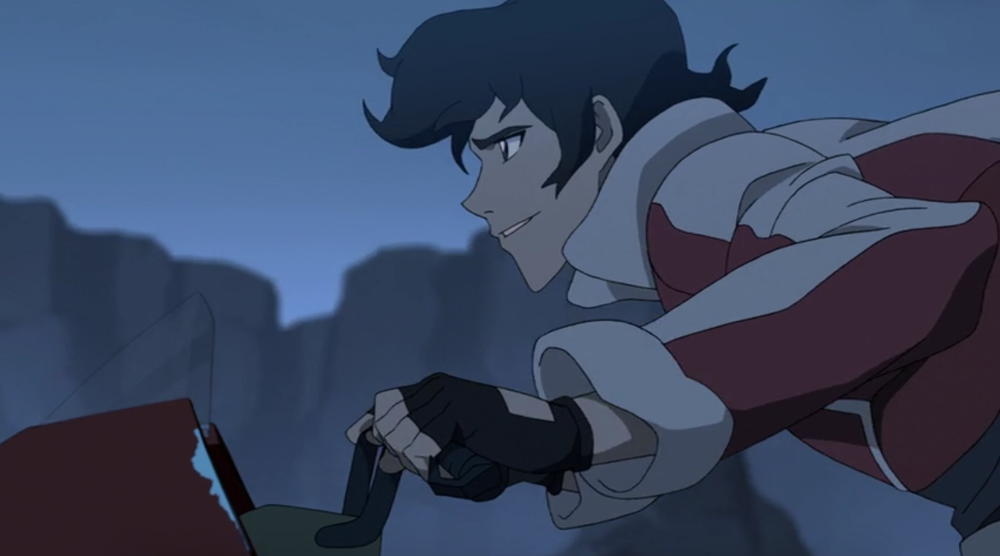
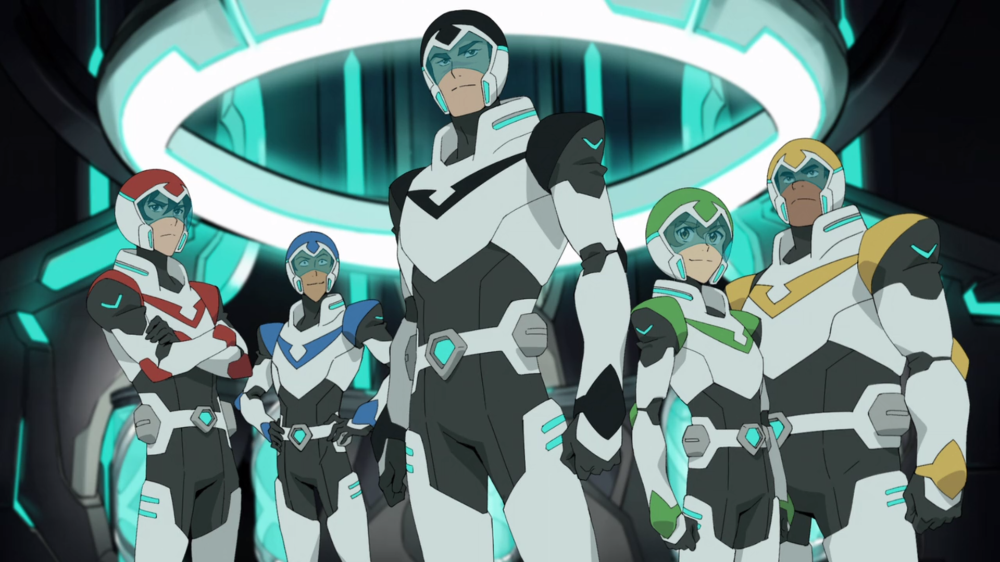
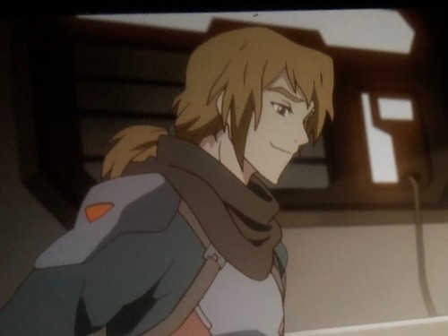
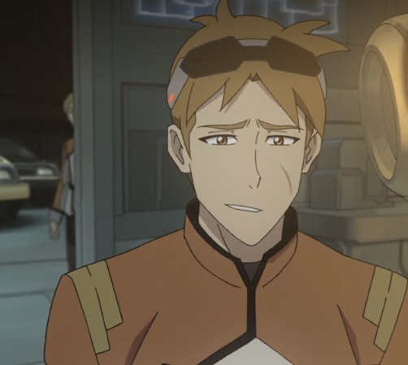

Voltron Legendary Defender first premiered on Netflix in June 2016 and ran for 8 seasons with a total of 78 episodes before ending in December 2018. Legendary Defender is the most recent reboot for the Voltron franchise.
Voltron is about a group of 5 humans who all pilot giant mechanical lions that can form into a giant robot called Voltron and they have to fight the evil Galra led by Zarkon who has enslaved most of the universe.
The 5 humans, Lance, Keith, Pidge, Hunk, and Shiro end up in this situation through a series of shenanigans. Hunk, Lance, and Pidge are all attending the same pilot school and are in a group together. They end up seeing a strange ship crash one night and go to check it out. While spying on the ship, Pidge hacks into the system the pilot school, the Garrison, set up when they were also investigating and find out that a pilot called Shiro is in there. Shiro was presumed dead when he and his crew went missing on a trip to a far away planet called Kerberos. Knowing that the Garrison covered this up, the three decide to try and break in. while discussing how to get in, another person starts sneaking in. This guy is called Keith. Keith breaks in, and then the trio join him in smuggling Shiro out. The five of them, Shiro being knocked out, escape on Keith's hoverbike. It's at this point, with Keith flying over a cliffside looking smug, that I realised my life would never be the same.

After regrouping, they end up finding the blue lion. Lance is the only one able to deactivate the lion's forcefield and flys them into space. They fight a Galra ship, end up going through a wormhole and land outside a castle on a mysterious planet. In this castle they end up finding two aliens, Alteans, who have been asleep for 10,000 years in healing pods (why healing pods can stop people from aging I will never understand). These two aliens, Allura and Coran give them the tl;dr on the whole intergalactic war situation. They go on missions to find the rest of the lions. They form Voltron, and are now the new paladins of Voltron. And thats just episode 1.

I started watching Voltron in 2018 just before season 6 was released. It is now 2023 and the show still lives rent free in my head. If I had known back then that I would spend the next 4-5 years of my life obsessing over a kids show about giant space robot cats, I would've decided not to watch it but here we are. Watching Voltron was both the best and worse decision I ever made. It properly kickstarted my fandom experiences and got me started reading fanfiction, but the characters were done so dirty by the end with seasons 7 and 8.
The show has such a great premise that so much can be done with yet the last two seasons went in a direction I don't think anyone wanted. They introduced so many new characters with no proper time to develop any of them, they announced Shiro would have a male love interest called Adam but killed Adam off after not even 5 minutes of screentime. The relationship between Lance and Allura came out of nowhere. Despite Lance showing feelings for her for 6 seasons, Allura was not interested until her Galra boyfriend turned out evil. They then killed off Allura? So she could save the multiverse? Or something? They made Lance a farmer who is hung up on Allura for the rest of his life. They cut Matt's (Pidge's brother) hair short which is honestly just a crime against humanity.
 
Sure there were some funny momements here and there but for the most part it was just a completely forgettable last 2 seasons. I do not recommend being in that fandom as the last two seasons aired. No one was happy.
Yet it's still one of the top favourite shows of all time? How? I will never understand. I have the first 2 seasons of DVD, got them secondhand but I am lowkey tempted to buy a new copy for the fun of it. I want to get seasons 3-6 as well, and they never made 7-8 into a DVD so that saves me the decision of deciding whether I want to spend like $20 on trash so ¯\_(:/)_/¯ I love the characters so much, they mean so much to me
Fanfictions I love more than life itself (all of these are klance):
Nightmares by Trashness
giggles and crushes (and absolute mortification) by jilliancares
A Dragon's Treasure by wittyy_name
Lance and Keith's guide for how to cure insomnia by orphan_account
fuckign witches by orphan_account
The fact that Voltron is set in space where it's a normal plot point to meet some random aliens with different cultures means theres so much fanfiction potential. You need a very specific plot? Aliens. You can justify so much with "its an alien thing" its honestly insane. Its like in a certain /magic school/ series where in fanfiction you can just say "oh its magic" and justify anything. I love it so much. Like yeah you could just reason it however anyway but the added bonus of 'this could feasibly be canon to the universe' makes me so happy.